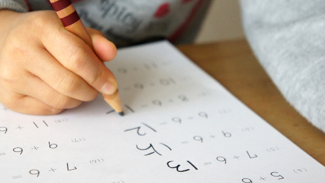
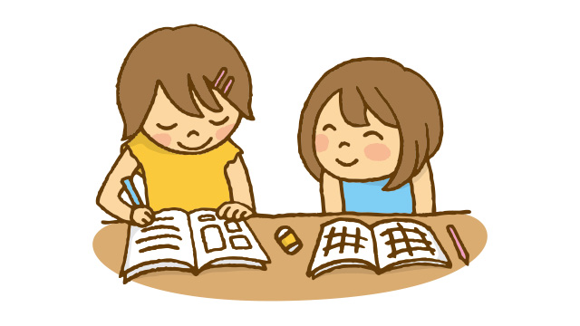
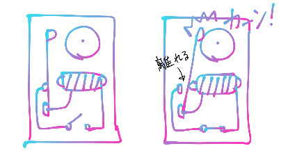

今回はタイトル通り、算数や数学について、「親が家で子どもとどう関わることができるか」に触れたいと思います。結論から言うと、「学校や塾の宿題など、いわゆるこども自身にとって‘やるべきこと’については手出し無用」というのが、私の考えです（※ただし、後述する子どもの「段階」に応じて、ということになりますが）。
算数・数学、家での関わり方～初級編～
親が「どうにかしなければ」と感じているというときは、次のいずれかのはずです。
- やる気がない（放っておくとやらない）
- 頑張っているが解けない
1. やる気がない（放っておくとやらない）
当然やる気がないわけですから、親がああだこうだと小言を言っても「うるさいなあ」とか「はいはい、わかりました～（面倒なので聞き流す）」となるのがオチです。
でも見過ごすわけにもいかず親はついつい言ってしまう。その気持ち、ヒジョ～によくわかります（笑）。
しかし、仮に叱りつけて強制的にやらせたところで、その場では子どもは仕方なしにやるかもしれませんが、意識は改善されないでしょう。対処療法に過ぎません。
それどころか、「今からやろうとしていたのに、一気にやる気なくした！」などと言われては、まさにヤブヘビというか、裏目に出たとしか言いようがありません。
それならいっそ、一言いいたいところをグッとこらえて、外（学校や塾）で子どもが叱られることで困らせればよいのです。
あらかじめ、「うちの子、おそらく宿題をちゃんとやっていないと思うので、厳しく叱ってやってください」と、先生に頼んでおくのも手です。
2. 頑張っているが解けない
子どもは一所懸命にやろうとしているわけですから、見ている側としては何とかしてあげたい、という気持ちになります。そこで、もし助け船を出すなら、「ヒントを与える」にとどめるのがよいかと思います。
というのも、手取り足取り教えるのでは受け身になるし、何よりせっかくの「自力で何とかしようとしている」という状況を奪ってしまうからです。
あと、マジメな子にありがちなのが「ちゃんと正解を出せた状態にしないとダメ」という思い込み。必要以上に時間をとられて、ものすごく日常がヘビーなものになってしまいます。
全然そうでなくてイイんです！
「どこまで考えたか」が普段の勉強で大切なことで、疑問点を解消するのは授業という場なのですから、そこで質問すれば済む話です。
それを完璧な状態にしなくてはいけないと思い込んで、親も必死に教えてストレスがたまってしまっては勉強が‘苦行’になってしまいますよね。
介入することが、親の当然の責務と考えるよりも、「そこまで頑張ったんっだから、あとは聞けばいいじゃない」と、大きく構えてほしいものです。
と、ここまでは算数・数学と向き合う初級編の話。その子の中のステージがアップしていれば別です。
算数・数学、家での関わり方～中級・上級編

さて、ここからは算数・数学の家での関わり方「中級・上級編」です。
これは基本的に子どものステージが少し上の段階、つまり多少は数学の楽しさを知り、チャレンジ精神もあるという条件での話です。
1. 中級編～没頭応援型～
子どもが、ある一問に悩んでいるとします。もしどうしても独力でなしとげたいという欲があるのであれば、もう何も言わず放っておき、腹が減っては…ということで食料補給のおやつでも差し入れてあげればよいでしょう。
どんなに時間がかかろうと構わない、そういう意欲にあふれていれば、それはもう理想的な勉強（＝趣味の域）なので、いくら時間をかけても本人は苦ではないでしょう。逆に問われるのは、「寝食を忘れて存分に没頭させる親の度量があるかどうか」かもしれませんね。
同僚の庄本氏は、高校時代にものすごくハマった本があって、学校をサボって数日間にわたり昼夜問わず読み続けたといいます。その時、彼の父親はそれをとがめるどころか逆に奨励したそうです。
そこにあったのは、ただ真面目に学校に通い毒にも薬にもならない（と言ったら失礼かもしれませんが）授業を受けることよりも、庄本氏の営みの方がはるかに本来の学びであり、何かしらの形で肥やしになるという冷静な父親の判断だったに違いありません。
また、私自身にも似たような経験があります。
中２の頃に、どうしても解けない数学の図形問題がありました。珍しくプリントと格闘していた母親が覗き込んできて、
「なによ、苦戦してるの？」と、若干挑発的にからんできました（笑）。
で、それを意に介さず夢中になっている私を見て、自分も挑戦すると母親が参入してきたのです。
不思議といい迷惑だとは思いませんでした。
それは母親の中に‘純粋にやってみたい’というものがあり、‘教育的配慮という名の邪心’でないものが私に伝わったからだと思います。
結局、戦友と化した母親もまったくもって歯が立たず、平日にもかかわらず翌朝４時半まで格闘し、ようやく白旗を上げました。その間、「もう寝よう」だとか「明日の学校に響くから…」みたいなセリフはお互い一言も発しませんでした。二人ともが、言葉にこそしませんでしたが、そこにもっと価値あるものを感じたからでしょう。
算数・数学には、ある程度多くの人に当てはまる‘よい勉強の型’があるのは事実です。例えば計算の形跡を丁寧に残すことであったり、図を大きく描く、基本パターンの問題を理解して繰り返し類題を解いて身に着ける…等々。
ただ、それは「その方がよいだろう」という一般的メソッドであって、「確かにそうした方がいいかもな」というふうに、本人の腑に落ちるものがないと意味がありません。
そういう技術的なことをよりも、一つの問いに対して全身全霊で取り組むという経験、それは一見効率が悪いように見えますが、そういうあらゆる方向から攻める営みこそが、その後につながるかけがえのない経験であることは間違いありません。
2. 上級編～子どもの予想の上をいく提案～
学問的興味を引き出すこと、これが最良の教育だということが我が研究所所員の一致した根本理念です。ただ、これを家庭で実践するとなると、構造的に難しいものがあるでしょう。なにしろある程度の年齢になると、どんなに親がよかれと思って提示したことも、子どもにとっては煙たいお仕着せになってしまいますからね。
例えば親が「読書をしてほしい」と思ったとします。ここで‘親が読んでほしいと思っている本’を子どもにただポンと与えた場合、ほぼ失敗に終わったという経験、皆さんにもありませんか？
算数・数学になるともっと大変で、「教えてあげましょう！」と、親が張り切っても、子どもは面倒くさく感じたりしらけたり…。特に数学が得意だったお父さんなんかは、その張り切りが空回りしてしまうことも多々…。
私の父親は技術者（過去のブログ「ゲーム問題、意外すぎる結末」をご参照下さい）だったので、理系は自分の得意分野ということで、割と口を出してきたんですね。
でもそのほとんどがため息の出るものでした。小学校高学年のときには、幼なじみの友人とともに、私の父親が主催する「日曜算数教室」みたいなものに参加していたのですが、算数が好きな私でも、ちょっと面倒に感じるイベントでした。
中３のときには、夏休みの自由研究で「トランジスタの研究」なるものを‘やらされ’ました。そして、最後まで何をやっているのかわけのわからないまま学校に提出…（笑）。
もちろん、父親に悪気はなく、息子にも自分が面白いと感じるものに触れさせたいという思いがあったはずです。それだけ、家庭という場では思春期特有の親子関係（特に子どもの反発心）や、親子だからこそ出る子どもの甘えなど、一筋縄ではいかない状況があるわけです（だからこそ、学校や塾で子どもが先生から受ける刺激が重要）。
しかし、親の提案が劇的に功を奏すこともあるんです。それは「予想を裏切られる形で親の提示してきた内容が子どもに響く」という場合です。
本当に子どもが「これは面白いぞ」と感じるものを提供するのは簡単ではありませんが、ヒットすれば例え最初はお仕着せで始まったものでも子どもはノってきます。
またまた私の夏休み自由研究の話で恐縮ですが、小４の時に父親から提案されたものは心に刺さりました。
それは、「電磁石で鳴るベル」
旧式の目覚まし時計が鳴る仕組みのほとんどは、この電磁石式です。
仕組みはこんな感じです。

- 最初は上図のようにスイッチが開かれていて、ここでスイッチを閉じます（あ、電池を描き忘れました…電池があるという設定で）。
- すると回路がつながって、上図のように平べったい金属のアームが電磁石に吸いつけられてしなります。それでアームがベルを鳴らすのですが、このときアームの左側が接地点から外れて回路が途切れます。
- 回路が途切れると電磁石ははたらきませんから、しなったアームはもとの位置にビヨンと戻ります。
- アームがもとに戻ると、なんと今度は回路がつながるのです。あとは上記の繰り返しです。
子ども心に、この仕組みは驚きでした。理屈はわかる、でも本当にうまくいくのか！？そしてどんなふうに聞こえるのだろう。私はまんまと乗せられて、作業にとりかかりました。
完成したベルは、「カカカカカカンッ！」というスゴイ音を鳴らし、とても感動したことを覚えています。それほど大したエピソードじゃないな…と拍子抜けした方がいたら申し訳ありません。ただ、ここで強調したいのは、‘自分の子どもが食いつくツボ’を親が見抜くという点です。
それは子どもの長所や潜在能力を引き出してあげるという教育の原点であり、子どもにとって一番ありがたい大人の接し方なのです。…でもそうそう簡単にはいかないので上級編なのですが。
ちなみに、「理科についての接し方じゃん！」と、突っ込まれる前に言っておきます。
あくまでこういう接し方、という一例です（笑）。長文、失礼しました。次はまた日記にしようかな（笑）。